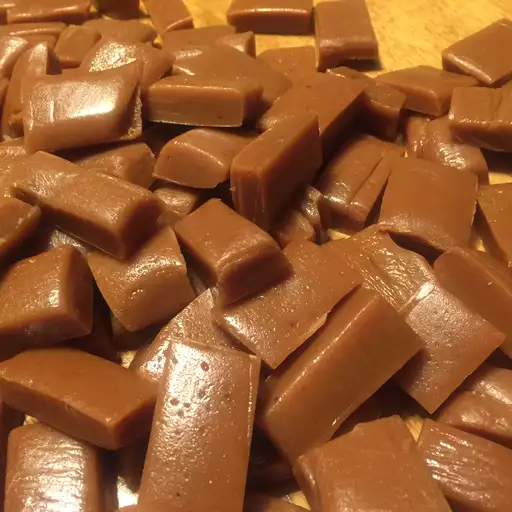

Caramels

Description
This caramel recipe has been used for almost 41 years.
Whoever invented this didn't have any bad batches and is loved by it's family.
Ingredients
- 1 pint heavy whipping cream
- 2 cups white sugar
- 1 cup packed brown sugar
- 1 cup butter
- 1 cup corn syrup
- 1 cup evaporated milk
- 1 ¼ teaspoons vanilla extract
Steps
- Grease a 12x15-inch pan; set aside.
Attach a candy thermometer to a medium-size pot.
- Place whipping cream, white sugar, brown sugar, butter, corn syrup, and
evaporated milk into the prepared pot.
Cook and stir mixture over medium heat until temperature reaches
250 degrees F (120 degrees C). Remove the pot from heat.
- Stir in vanilla. Pour mixture into the prepared pan; let cool completely.
- Cut caramel into 60 small squares. Wrap them in waxed paper for storage.